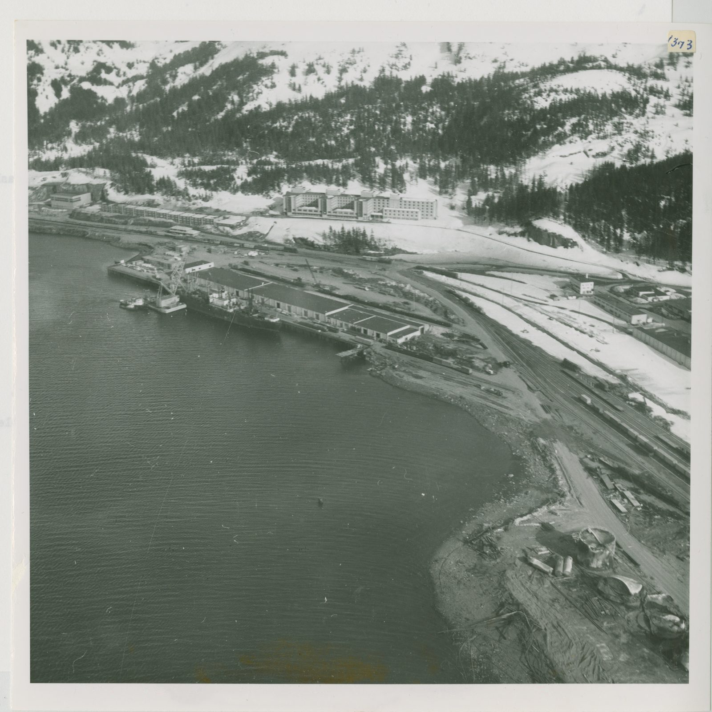
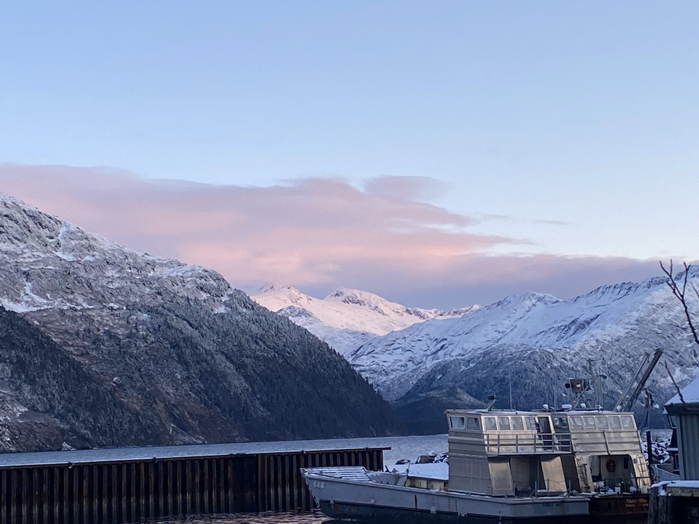

Directory / Southcentral Alaska / Whittier, AK
Whittier tides — Passage Canal & the small boat harbor
High and low tides for the coming week from NOAA station 9454949 (Whittier, Passage Canal — 60.7783, -148.665), about a kilometer east of the Whittier Small Boat Harbor. Times are local (AKST/AKDT). Heights are feet above Mean Lower Low Water (MLLW). Whittier sits at the head of Passage Canal on the west side of Prince William Sound. Most people and boats come and go through a one-lane tunnel shared with the Alaska Railroad. The town has a 360-slip ice-free city harbor, the closest saltwater launch to Anchorage, a cruise and ferry port, and a Cold War Army past you can still see in Begich Towers and the Buckner Building.
Tide, tunnel & the trip out of Passage Canal
The tunnel sets your clock. Outside Whittier, the tide is not the only schedule. The Anton Anderson Memorial Tunnel is a controlled one-lane tunnel. On the official winter schedule (Oct 1 – Apr 30), traffic leaves Whittier on the hour and comes in on the half hour, 7:00 AM to 10:45 PM. The last opening out of Whittier is 10:00 PM. When it is 32°F or colder, each opening lasts only the final five minutes. If you are hauling out on an evening low tide, plan for the tunnel too. Check the official page before you go, because train traffic can add delays.
Inside calm, outside wind. NWS forecasts Passage Canal (PKZ723) separately from Northwest Prince William Sound (PKZ724) and Southwest Prince William Sound (PKZ726). In the forecast issued 3:49 PM AKST Tue Nov 10, 2026, Passage Canal called for variable wind around 10 kt and 2 ft seas through Thursday. Northwest Prince William Sound had a Small Craft Advisory for Wednesday night, with E wind 25 kt and seas 4 ft. Check every zone on your route below.
Tide range: in the NOAA predictions fetched 2026-11-10, the largest swing in the next five weeks comes on Wednesday, November 25, 2026: a 15.6 ft high at 12:57 PM followed by a −2.7 ft low at 7:49 PM, a drop of about 18.2 ft. Evening minus tides run every night from Nov 22 through Nov 29, and again Dec 6–11.
Computed from NOAA CO-OPS hi/lo predictions for 9454949 (2026-11-11 through 2026-12-16), the NWS coastal waters forecast text, and the DOT&PF winter tunnel schedule, fetched 2026-11-10 AKST. Not for navigation.
Whittier then & now
Historic


Current

.jpg){kind=link}
Official NOAA predictions Station home NOAA chart viewer View on Windy
Port Sponsor — Whittier, AK
Top placement for fuel docks, marinas, yards, and marine businesses.
$25–$50 / month
Wednesday, November 11, 2026
| Tide | Time (local) | Height (MLLW) |
|---|---|---|
| High | 2:27 AM | 11.3 ft |
| Low | 7:48 AM | 4.4 ft |
| High | 1:37 PM | 13.6 ft |
| Low | 8:32 PM | -0.3 ft |
Thursday, November 12, 2026
| Tide | Time (local) | Height (MLLW) |
|---|---|---|
| High | 3:02 AM | 11.0 ft |
| Low | 8:24 AM | 4.9 ft |
| High | 2:08 PM | 13.2 ft |
| Low | 9:10 PM | 0.3 ft |
Friday, November 13, 2026
| Tide | Time (local) | Height (MLLW) |
|---|---|---|
| High | 3:40 AM | 10.5 ft |
| Low | 9:02 AM | 5.4 ft |
| High | 2:40 PM | 12.6 ft |
| Low | 9:51 PM | 1.0 ft |
Saturday, November 14, 2026
| Tide | Time (local) | Height (MLLW) |
|---|---|---|
| High | 4:25 AM | 10.0 ft |
| Low | 9:45 AM | 5.8 ft |
| High | 3:15 PM | 11.8 ft |
| Low | 10:34 PM | 1.6 ft |
Sunday, November 15, 2026
| Tide | Time (local) | Height (MLLW) |
|---|---|---|
| High | 5:23 AM | 9.6 ft |
| Low | 10:33 AM | 6.1 ft |
| High | 3:58 PM | 10.9 ft |
| Low | 11:21 PM | 2.2 ft |
Monday, November 16, 2026
| Tide | Time (local) | Height (MLLW) |
|---|---|---|
| High | 6:32 AM | 9.5 ft |
| Low | 11:32 AM | 6.2 ft |
| High | 5:04 PM | 10.0 ft |
Tuesday, November 17, 2026
| Tide | Time (local) | Height (MLLW) |
|---|---|---|
| Low | 12:11 AM | 2.8 ft |
| High | 7:32 AM | 9.8 ft |
| Low | 12:41 PM | 6.0 ft |
| High | 6:47 PM | 9.4 ft |
Wednesday, November 18, 2026
| Tide | Time (local) | Height (MLLW) |
|---|---|---|
| Low | 1:07 AM | 3.2 ft |
| High | 8:20 AM | 10.4 ft |
| Low | 2:02 PM | 5.3 ft |
| High | 8:11 PM | 9.4 ft |
Tide data: NOAA CO-OPS station 9454949, predictions (hi/lo, MLLW, local standard/daylight time). Refreshed with each nightly build; the marine-weather snapshot time below shows the latest fetch. Currents: the nearest NOAA current-prediction station is PWS0703 (Blackstone Point, about 18 km away), which NOAA describes as weak and variable — NOAA current predictions.
Marine weather & cameras
NWS marine forecast — Passage Canal (PKZ723)
Issued 349 PM AKST Tue Nov 10 2026. Snapshot fetched 2026-11-10 21:11 AKST from NWS text product. Official zone forecast · Raw text
- .TONIGHT...Variable wind 10 kt. Seas 2 ft. Rain showers.
- .WED...W wind 10 kt in the morning becoming variable less than 10 kt. Seas 2 ft. Rain with snow.
- .WED NIGHT...E wind 15 kt. Seas 2 ft. Rain and snow.
- .THU...Variable wind less than 10 kt. Seas 2 ft.
- .THU NIGHT...Variable wind 10 kt. Seas 2 ft.
- .FRI THROUGH SAT...W wind 20 kt. Seas 3 ft.
- .SUN...W wind 10 kt. Seas 2 ft.
NWS marine forecast — Northwest Prince William Sound (PKZ724)
Issued 349 PM AKST Tue Nov 10 2026. Snapshot fetched 2026-11-10 21:11 AKST from NWS text product. Official zone forecast · Raw text
...SMALL CRAFT ADVISORY WEDNESDAY NIGHT...
- .TONIGHT...N wind 10 kt. Seas 2 ft.
- .WED...NW wind 10 kt becoming NE 15 kt in the afternoon. Seas 3 ft. Rain.
- .WED NIGHT...E wind 25 kt diminishing to 10 kt after midnight. Seas 4 ft subsiding to 2 ft after midnight. Rain and snow.
- .THU...E wind 10 kt. Seas 2 ft.
- .THU NIGHT...Variable wind less than 10 kt. Seas 2 ft.
- .FRI THROUGH SUN...N wind 10 kt. Seas 2 ft.
NWS marine forecast — Southwest Prince William Sound (PKZ726)
Issued 349 PM AKST Tue Nov 10 2026. Snapshot fetched 2026-11-10 21:11 AKST from NWS text product. Official zone forecast · Raw text
- .TONIGHT...N wind 20 kt. Seas 2 ft building to 4 ft after midnight. Rain.
- .WED...N wind 20 kt. Seas 4 ft. Rain.
- .WED NIGHT...SE wind 20 kt in the evening becoming variable less than 10 kt. Seas 4 ft subsiding to 2 ft after midnight. Rain.
- .THU...Variable wind less than 10 kt. Seas 2 ft.
- .THU NIGHT...NW wind 10 kt. Seas 2 ft.
- .FRI THROUGH SUN...N wind 10 kt. Seas 2 ft.
Nearby NDBC observation — Whittier AMHS terminal (WIXA2)
wind 180°, 2 kt, gust 3 kt, air 41°F, 982.7 hPa
Observation time 2026-11-10 20:52 AKST (converted to AKST). Attribution: NOAA NDBC station WIXA2. Snapshot fetched 2026-11-10 21:11 AKST.
Nearby NDBC observation — Point Pigot (PPXA2)
wind 280°, 8 kt, gust 13 kt, air 41°F, 982.6 hPa
Observation time 2026-11-10 20:52 AKST (converted to AKST). Attribution: NOAA NDBC station PPXA2. Snapshot fetched 2026-11-10 21:11 AKST.
Nearby NDBC observation — Western Prince William Sound buoy (46081)
wind 250°, 10 kt, gust 12 kt, air 42°F, 982.4 hPa, water 45°F
Observation time 2026-11-10 20:40 AKST (converted to AKST). Attribution: NOAA NDBC station 46081. Snapshot fetched 2026-11-10 21:11 AKST.
Harbor webcams
- Borealis Broadband — Whittier Harbor cam (free public live view of the small boat harbor; link only, not embedded or rehosted)
- Prince William Sound Salt Co. — 360° harbor cam (free public; mounted on their Harbor View Drive building, with a view of the ramp; link only)
- Cliffside Marina — live PTZ camera (free public stream listed on the marina’s web cams page; link only)
- FAA WeatherCams — Whittier (PAWR) (free public link; may read “image not available” in winter darkness; not embedded)
Whittier boater notes (official links)
- Anton Anderson Memorial Tunnel — schedules, tolls & restrictions (Alaska DOT&PF). Schedule line 1-877-611-2586.
- City of Whittier Harbor: float plans, launch passes, parking, moorage wait list, and fee schedule.
- Barry Arm landslide & tsunami hazard status (Alaska DGGS). Read this before running up Port Wells or Harriman Fiord.
- Alaska Marine Highway: ferry to Valdez and Cordova from the Whittier terminal.
- Alaska Railroad Glacier Discovery route: rail access to Whittier.
- NOAA ENC chart viewer (Passage Canal is on NOAA chart 16700; we link to NOAA’s viewer and do not host charts).
Local marine & shore directory
Verified public listings only. List free · Get featured
Marine services
Moorage & marinas
Seafood processors & buyers
Fuel docks
Shipyards & haul-outs
Boat repair & mechanics
Marine suppliers & chandleries
Electronics sales & installation
No verified listing yet — list your business free.
Welding & fabrication
No verified listing yet — list your business free.
Canvas & upholstery
No verified listing yet — list your business free.
Surveyors
No verified listing yet — list your business free.
Towing & salvage
Ice & bait
Fishing charters
Ashore for boaters
Groceries & provisioning
Hardware
Liquor stores
Laundromats
Showers
Lodging
Restaurants
Medical clinics
Pharmacies
No verified listing yet — list your business free.
Post office & shipping
Airport & floatplane
Propane
Auto & truck rental
We checked these listings on 2026-11-10 against each business's own site or a public directory: the City of Whittier Harbor page, the Alaska Association of Harbormasters member profile, Greater Whittier Chamber of Commerce listings and the 2025 chamber map, Great Whittier LLC, Shoreside Petroleum, and Cliffside Marina. Great Whittier is a seasonal salmon plant, opened for the 2026 season in the former Whittier Seafood plant. Many tour and charter businesses run only in summer. The city harbor offers dry storage on request (ask the Harbormaster). Basic listings are free; a Featured listing is $10/month or $100/year. For corrections or a free listing, contact J.L. Miller at pacifictides.ak@gmail.com (email only).
Local news — Whittier, AK
Plain links to local outlets. Always check the source for the latest. Local news partners welcome.
Free weekly tides & marine weather
Get a short email for your port. We do not sell your email. Privacy.
Mailing list powered by Buttondown.
Boating gear on Amazon
As an Amazon Associate I earn from qualifying purchases.
Helpful search links for common gear. Prices and availability are on Amazon.
Other Alaska ports
Sources
- NOAA CO-OPS station 9454949 — Whittier, Passage Canal (MDAPI name Whittier; lat 60.7783, lng -148.665; verified 2026-11-10)
- Nearby currents reference: PWS0703 Blackstone Point (not plotted on this page)
- Predictions API:
api.tidesandcurrents.noaa.gov/api/prod/datagetter(product=predictions, interval=hilo, datum=MLLW, time_zone=lst_ldt) - NWS coastal waters forecast zones PKZ723 Passage Canal, PKZ724 Northwest Prince William Sound, PKZ726 Southwest Prince William Sound (PKZ723 confirmed via api.weather.gov zone geometry; advisories cross-checked with api.weather.gov active alerts)
- NDBC observations: WIXA2 Whittier AMHS, PPXA2 Point Pigot, 46081 Western Prince William Sound buoy
- Alaska DOT&PF Whittier Tunnel winter schedule; City of Whittier Harbor page (checked 2026-11-10)
- Directory:
data/businesses.csvrows for port_slug=whittier, each with its public source URL (verified 2026-11-10) - Photos: U.S. National Archives / U.S. Army Corps of Engineers (public domain); USDA Forest Service Alaska Region (public domain) via Wikimedia Commons. Graphics: original Pacific Tides artwork.